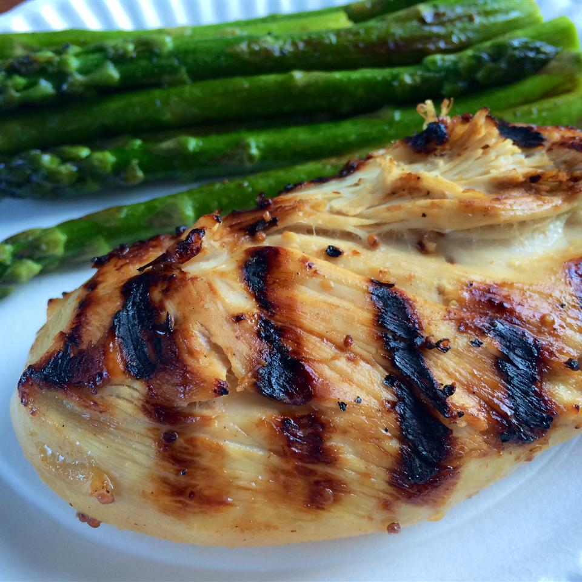

Unbelievable Chicken Recipe

Delicious, light, and easy to make!
This unusual combination of common ingredients is fabulous! Everyone who tastes it asks me to share the recipe.
You will
love it and the many compliments you get--I promise!
Ingredients
- 1/4 cup apple cider vinegar
- 3 tablespoons prepared coarse ground mustard
- 3 cloves of garlic, peeled and minced
- 1 lime, juiced
- 1/2 lemon, juiced
- 1/2 cup brown sugar
- 1-1/2 teaspoon salt
- ground black pepper (add to taste)
- 6 tablespoons olive oil
- 6 skinless, boneless chicken breast halves
Steps
- In a large glass bowl, mix the cider vinegar, mustard, garlic, lime juice, lemon juice, brown sugar, salt,
and pepper.
Whisk in the olive oil. Place chicken in the mixture. Cover, and marinate 8 hours, or overnight.
- Preheat an outdoor grill for high heat.
- Lightly oil the grill grate. Place chicken on the prepared grill, and cook 6 to 8 minutes per side, until
juices run
clear. Discard marinade.
- NOM NOM NOM